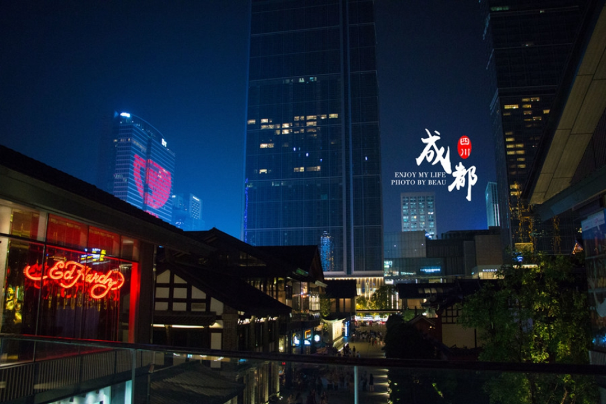
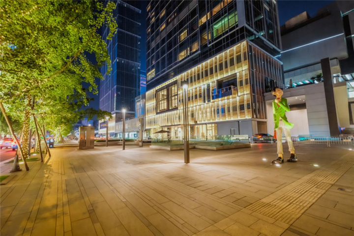
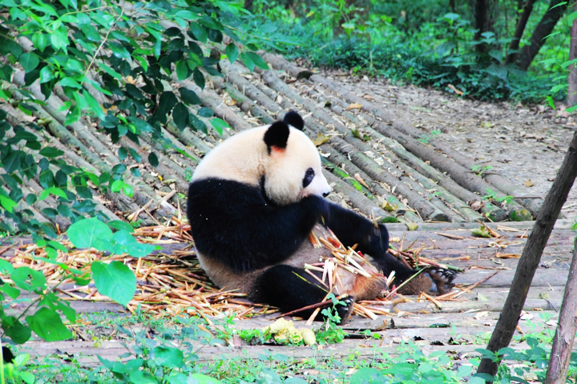
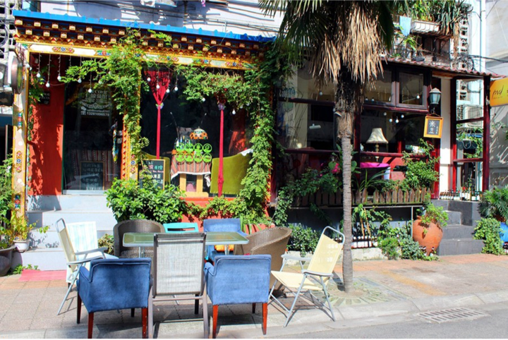
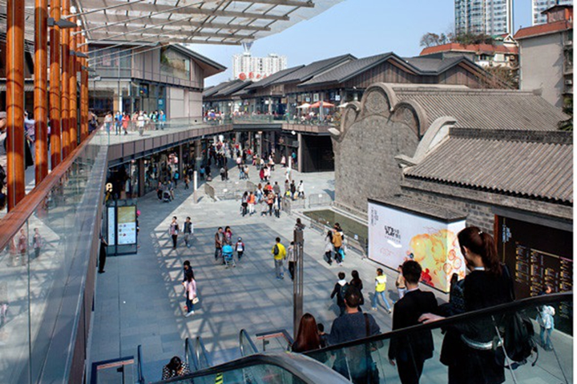

-
千风万景中遇见你 - 首页
- 精选
- 邂逅
-

- 消息

目的地>中国>成都
Cheng du


成都

成都天气
晴 11℃~22℃
142人来过这里
26篇旅游日志
26篇旅游日志

景点介绍
“蓉城”成都，自古便有“天府之国”的美誉。“九天开出一成都，万户千门入画图”，在中国偌大的历史版图上，成都是惟一建城以来城址以及名称从未更改的城市.这座西南重镇，巴蜀之都，历代都是西南的政治、经济、文化中心和长江流域的重要城市。
成都是一座来了就不想离开的城市，她的生活节奏保持在一个极为人性化的速度上。成都人常挂在嘴边的“巴适”是舒服合适的意思，满城的茶馆正是这座城市悠闲的气质的最好体现。闲适的生活节奏是这座城市的名片，而满街的川菜馆、火锅店、小吃店更是让人流连忘返的罪魁祸首。
成都，仿佛一张柔软的沙发，仓促的步履行到此处便不禁放缓，不禁自拔的陷进温柔乡的怀抱。来到这座城市，与其忙于参观城内外的景点，不如在其中悠闲的享受着生活，不如将自己抛向遍布风霜的征途。成都是很悠闲的城市，文化底蕴深厚，生活节奏慢，周边有很多好玩的景点。
成都的美食实在是让人流连忘返，最最最推荐的就是吃，宽窄巷子很多好吃的，走饿了可以吃吃小吃和正宗的川菜。
景点美照




- 2016-2017© 遇见网® yujian.com All rights reserved.Version v1.00
遇见网为旅行爱好者提供记录自己旅途见闻并展示的个人空间。